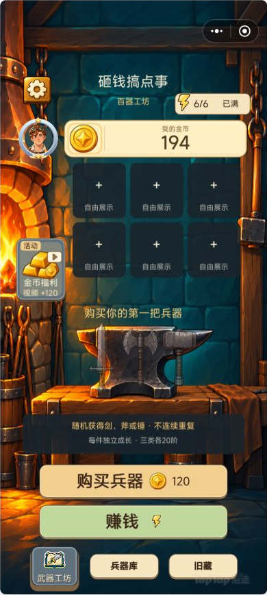
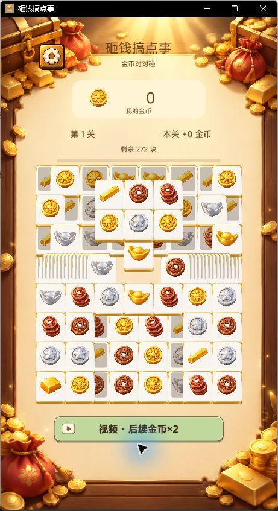

短局收入连接长期养成
关内完成配对即可看到金币反馈，关外把收入转化为兵器成长。以两个节奏不同的循环衔接，让重复挑战有明确去向。
TAPTAP MAKER / 个人 AI 游戏实践
清除多层财富砖赚金币，再回工坊购买、锻造和收藏兵器。短局配对与长期收集相互连接，新版扩展剑、斧、锤三条独立培养路线。
GAMEPLAY / 核心体验
在多层财富砖中寻找可操作的相同图案，通过点击或拖拽配对，消除后即时获得金币。金币带回工坊用于购买和锻造兵器，收藏形态与展示位保留长期目标；下一局消除又为养成提供资源。基础关卡使用 71 个经过验证的布局循环推进。
IN-GAME CAPTURES / 游戏画面
工坊图为 10 月 15 日真实 Maker 预览的游戏区裁图；配对图为 10 月 13 日原生运行截图，展示基础规则。


DESIGN / 规则与取舍
关内完成配对即可看到金币反馈，关外把收入转化为兵器成长。以两个节奏不同的循环衔接，让重复挑战有明确去向。
本地新工坊将剑、斧、锤分别扩展为 20 阶，培养库可容纳 24 件兵器。玩家不只追逐一个图鉴序号，还能保留并选择不同兵器。
锻造中的成功、失败回收和保底共同影响资源安排；火、冰变异及异色形态提供额外收集目标。公开介绍中的旧 12 阶图鉴与这轮新工坊分别记录。
六个展示位供玩家自由安排兵器，配合八个免费头像与 27 个成就框形成个性化展示。界面迭代同时关注长名称、奖励说明和手机安全区。
MY PRACTICE / 项目推进
通过 AI 协作推进消除与工坊养成的规则衔接，迭代兵器独立培养、收藏展示、头像和成就表现。以真实试玩反馈检查点击和拖拽、收益反馈及奖励说明，并持续整理商店素材和版本介绍，使宣传内容能对应实际构建。
新版三类兵器各 20 阶的工坊已完成本地构建，新图标与介绍已保存为后台草稿；正式线上更新尚未确认。TapTap 公开页仍介绍旧 12 阶图鉴，下方第二张也为早期配对玩法画面。
TAPTAP / 游戏入口
TapTap 页面提供公开介绍与平台支持的试玩入口。平台当前可玩的内容以该页面为准，本页同时记录开发中的后续迭代。